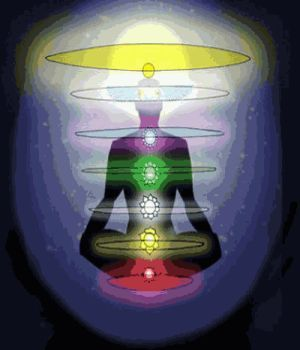

The Higher Chakras: 8th, 9th, 10th, 11th, and 12th

Most of you are
familiar with the 7 chakras that are contained
in your body ...
They are your links to energy centers -
There are higher chakras, though, that connect
you to more global, universal planes of
existence ...
There you plug in, as a unit, another
contributor to the greatness of the whole -
a nodal point ...
8th chakra: this represents your soul, as an
integral unit, a whole, inseparable, your
consciousness unit throughout time, on your
great journey ...
9th chakra: connects you to the earth
10th chakra: connects you to the sun, and
represents our solar system level of existence
....
11th and 12th chakra: are the galactic and
universal chakras respectively.
So from a simple soul, we elevate upwards
through 4 levels to plug into the universe, the
cosmos, the all.